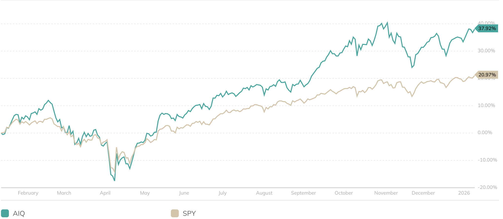
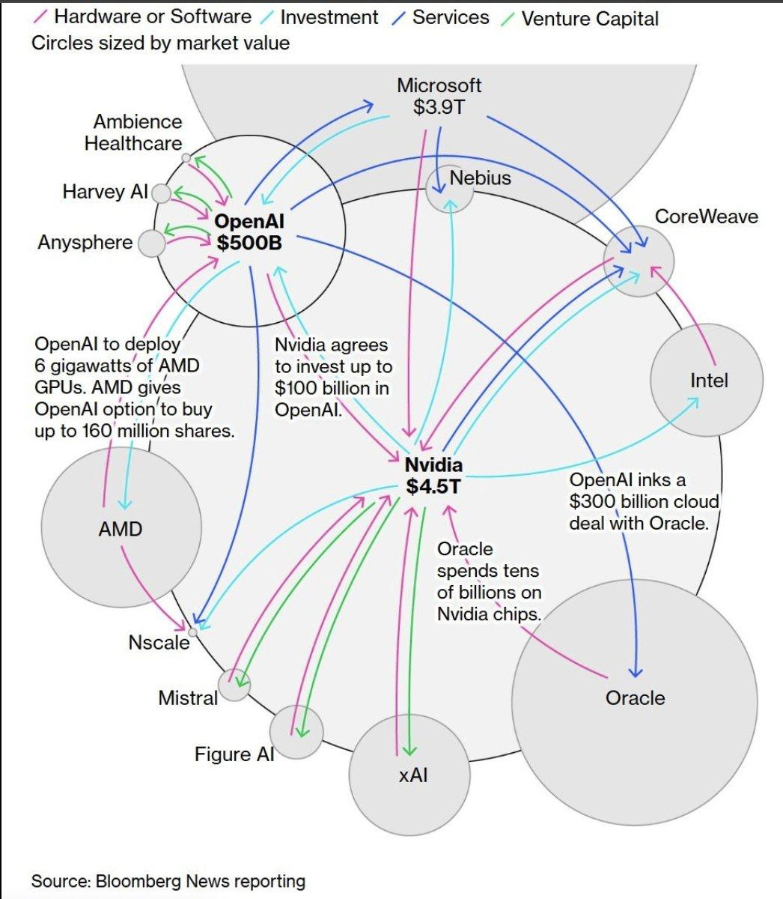

Introduction
Artificial intelligence remains the dominant theme in global equity markets, fueled by rapid advances in Large Language Models (LLMs) and generative AI. Despite rising geopolitical tensions and global competition, 2025 proved to be a strong year for the sector, characterized by narrow market leadership concentrated in structural bottlenecks like compute, manufacturing, and infrastructure1. As of the 12th of January 2026 the AI-focused ETF (AIQ) has nearly doubled the performance of the S&P 500 over the last year, signaling that investor confidence and growth remains high.

However, beneath these record-breaking valuations and earnings lie three critical structural risks; the speculative trillion-dollar bet on infrastructure partnerships, the widening divergence between energy demand and grid capacity, and an accounting mismatch where extended depreciation schedules conflict with the rapid obsolescence of modern hardware.
Concentration Risks and Opportunities
Demand for AI compute has been a key driver of AI growth, particularly within the upstream manufacturing and fabrication of AI chips, where revenue growth confirms that AI adoption is translating into real end-market demand rather than pure speculation. For example, NVIDIA, the leading supplier of graphics processing units(GPUs), recorded over 63% year-over-year revenue growth in Q3 of FY20262, driven mainly by enterprise investment by hyperscalers. TSMC, responsible for fabricating most of the world’s bleeding edge AI chips has similarly benefited from rising fabrication demand, reporting approximately 30% year-over-year revenue growth in 2025, with AI-related high-performance computing cited as its fastest growing segment3. This demand has reflected in a sharp increase in capital expenditures across the AI ecosystem, Major AI developers and infrastructure providers have announced unprecedented investment plans, signalling a shift towards long-term infrastructure commitments. OpenAI alone proposed long-term capital commitments of up to $1.3 trillion over the next five years4, supported by partnerships across energy sectors, compute, and memory supply; causing share prices of companies involved to skyrocket in anticipation of these major partnerships and long term profits.

However, amidst this optimism in brand new partnerships, investors and analysts are growing wary of the ecosystem’s reliance on “vendor financing, also known as round-tripping. It’s a phenomenon where companies effectively subsidize their own revenue growth by investing in companies that immediately purchase goods and services from them, creating a tight interdependency amongst those two companies. This directly degrades the quality of earnings(QoE). The failure of the investee could mean not just a loss of invested capital to the investor, but also an evaporation of the revenue that was artificially propping up their metrics. This is the case across the current AI ecosystem, hundreds of billions of dollars invested around in giants like OpenAI, AMD and Oracle, but startups alike, with names such as Mistral and Nebius, all of which purchase software and hardware products from each other. Concerning investors and analysts that current P/E multiples are inflated5, as numbers are recognized as if they were organic, recurring revenue. Not to mention the risk of how a single point of failure may cause cascading effects to the rest of the companies, potentially causing an unwinding as these companies are valued in anticipation of future cash flows stemming from these lucrative partnerships.
Agentic AI Challenges
Despite the massive capital flows into infrastructure, a dangerous discrepancy is emerging between the cost of building AI capacity and the actual revenue generated by AI applications. While the "pick-and-shovel" providers like NVIDIA and TSMC enjoy immediate profits and consistent revenue growth, the downstream software layer, consisting of chatbots, agents, and enterprise tools have yet to demonstrate a monetization structure that justify the hefty infrastructure costs. The gap has been exacerbated by the technological stagnation of "Agentic AI." Throughout late 2024, the industry consensus was that 2025 would mark the transition from passive LLM chatbots to autonomous agents that were capable of everyday business operations. However, this transition has proven far more difficult than anticipated. Instead of replacing human labour, enterprise AI initiatives have entered what analysts describe as "pilot purgatory" a state where experimental projects consume large amounts of computational resources but fail to reach full-scale production and integration. By the end of 2025, the abandonment rate for these initiatives spiked, confirming earlier warnings from Gartner that up to 40% of agentic AI projects would be scrapped after the proof of concept phase due to high error rates, its marginal benefits and escalating costs6. The stagnation of agentic AI is primarily driven by the “compounding error” problem. Whilst current AI models typically have accuracy rates of 95% to even 99%, a 95% success rate across just 10 autonomous steps results in a 59.8% success rate7. Leading to a lack of adoption across companies despite heavy capital expenditures. This friction directly confirms capital inefficiency concerns Goldman Sachs voiced in the “Gen AI: Too much spend, Too little benefit” thesis. At the current level of technological advancement, CapEx is disproportionate to the marginal ROI that automation can provide, directly creating a mismatch in revenues and CapEx8.
Energy Bottlenecks
By 2026, forecasts indicate energy availability will have superseded chip supply as the primary bottleneck for AI scaling. Speaking on the BG 2 podcast, CEO of Microsoft Satya Nadella said “ The biggest issue we are now having is not a compute glut, but it’s power... It’s not a supply issue of chips. It’s actually the fact that I don’t have warm shells to plug into. ” Referring to the incomplete data centers, as well as the lack of sufficient power and cooling capacity in order to run their AI chips9. U.S. data center power demand is on track to double from 2024 to 2030, with AI workloads projected to consume over 50% of total data center electricity by 202810. However this unprecedented growth in demand is not met with a corresponding expansion in energy availability. Interestingly, this has more to do with regulatory challenges the U.S. electrical grid is facing. Before new energy generation projects are connected to the electrical grid, they must apply and join the “interconnection queue”, a mandatory series of studies assessing feasibility, system impact and facility requirements. Unfortunately, this system has been overwhelmed by a surge of new renewable projects incentivized by tax credits11. The result is a critical structural failure, exponential demand is clashing with regulatory policies that still operate on a linear timeline. As a result, the time it takes to go from initial request to commercial operation has grown from under two years in 2008 to nearly five years in 2023. This physical constraint underpins projects like OpenAI’s proposed $1.3 trillion infrastructure initiative, as the current availability of energy is unable to match the rapidly growing demand.
Looking ahead, nuclear energy emerges as the primary solution, offering scalable, carbon-free baseload power capable of operating 24/7. Unlike intermittent renewables, nuclear energy offers the reliability required to bypass the congested public grid. As a consequence, the market has bid up speculative assets in the nuclear sector. Oklo, for instance, a prominent player in nuclear electrics has seen a 360.27% increase in year-over-year share price as of the 12th of January 2026 despite operating with negative free cash flow with no immediate revenue generating reactors12. Highlighting investor’s belief that the growing demand for energy will need to be supplemented by reliable, uninterrupted, emissionless and grid independent sources of energy. Hyperscalers like Microsoft have already begun investing in nuclear energy, Microsoft’s 20 year power purchase agreement(PPA) to incentivize restart of Three Mile Island (Constellation Energy) and Amazon’s nuclear investments have now been joined by Meta, which has formalized partnerships with Vistra and Oklo to secure gigawatt-scale production for resource intensive chips13. At the moment without sufficient energy generation and infrastructure, some AI chips at large hyperscalers remain underutilized, creating stranded asset risks and compressing gross margins on balance sheets. Already slim profit margins of downstream AI products raises even more questions about capital efficiency.
Depreciation Re-evaluations
Over the last five years, major hyperscalers have aggressively extended the accounting "useful life" of their network and server assets from three or four years to six. While management teams cite software efficiencies and improved hardware durability as the drivers, the timing raised suspicions amongst investors, especially in an environment where the rate of innovation only grows and capital expenditure increases. As this is a rapidly evolving field, useful life estimates are merely analyst predictions. This extension in useful life estimates affects costly data center equipment, most notably NVIDIA GPUs, hardware that hyperscalers spend tens of billions on annually. Whilst specific allocations are not disclosed, Nvidia’s data center revenue is highly concentrated, with its top six customers accounting for approximately 86% of sales, it is widely understood that these AI-focused hyperscalers are the largest customers of NVIDIA GPUs14. By extending the useful life of these assets, companies reduce their annual depreciation costs, strengthening short term net income & EPS. In theory, this is a sound strategy to boost earnings if the hardware remains productive for the full duration, but analysts are skeptical if companies are realistically reflecting the rate of obsolescence considering NVIDIA’s tight product release schedule. In Meta’s case, they extended the useful life of network and server assets from 4½ years to 5½, which boosted their net income by approximately $2.9 billion in 2025, driving upward pressure towards its share price.15
| Company | 2020 | 2021 | 2022 | 2023 | 2024 | 2025 |
|---|---|---|---|---|---|---|
| ORCL | 5 | 5 | 5 | 5 | 6 | 6 |
| META | 3 | 4 | 4 1/2 | 4 1/2 | 4 1/2 | 5 1/2 |
| GOOG | 3 | 4 | 4 | 6 | 6 | 6 |
| AMZN | 4 | 4 | 5 | 5 | 6 | 5 |
| MSFT | 3 | 4 | 6 | 6 | 6 | 6 |
| Average | 3.6 | 4.2 | 4.9 | 5.3 | 5.7 | 5.7 |
| Product | Architecture | Status | Announcement | Actual Availability |
|---|---|---|---|---|
| A100 | Ampere | Legacy | May 2020 | May 2020 |
| H100 | Hopper | Mainstream | Mar 2022 | ~Oct 2022 |
| H200 | Hopper | Mainstream | Nov 2023 | ~May 2024 |
| B100 | Blackwell | Mainstream | Mar 2024 | ~Late 2024 |
| B200 | Blackwell | Mainstream | Mar 2024 | ~Feb 2025 |
| B300 | Blackwell Ultra | Shipping | Mar 2025 | ~Oct 2025 |
| R100 | Rubin | Upcoming | Jan 2026 | - |
While hyperscalers depreciate assets over six years, NVIDIA releases a new architecture every two years, each offering significant performance gains as well as increased power efficiency compared to previous generations. By the time a GPU reaches the end of its accounting life of six years, it will already be three generations behind. This issue is magnified by the already limited data center and energy availability. When it is time to upgrade to the newest generation, the question remains if companies will have the capacity to run more costly, less efficient hardware. It remains unclear whether companies can realistically utilize these assets for the full duration, without recognizing impairment charges, or without losing competitive advantage. In a worst case scenario, if these assets become obsolete faster than accounting standards admit, it would not only reverse the short term earnings and hit share prices but cause larger shockwaves in the economy. These hyperscalers make up a large portion of the U.S. Stock market, and as of 15th of January of 2026 the top 7 companies in the S&P500 –all of which are AI centric companies– made up ~30% of the index, the concentration risk is undoubtedly high16. A reversal would directly affect pension funds, savings accounts, and send ripples in the global market.
With that being said, there is an argument to suggest network and server assets could potentially last up to six years. This argument is supported by the surprising resilience of "legacy" hardware in the secondary market. A prime example is the NVIDIA A100 (Ampere architecture). Despite being effectively dumped and phased out by hyperscalers in favor of newer generation Hopper and Blackwell products, these units have not become e-waste. Market data from 2025 indicates that used A100s still have a residual value of 30-40% of their MSRP on secondary markets(at the time of pricing the asset would be five years old17). The demand for “legacy” hardware exists because of a distinct divergence in AI workloads, while training a state of the art model requires the raw speed and efficiency of the newest chips to minimize time to market, the process of actually running these models for end-users is far less computationally demanding, this process is known as inference. For many enterprise applications, older GPUs offer a more attractive cost-to-performance ratio. As hyperscalers phase out these chips, moving them from premium training clusters to lower-tier inference fleets or internal batch-processing workloads18. At last, it will depend on whether hyperscalers will find productive use from these assets over its accounting life. Whether companies will be pressured to phase out their old hardware in order to remain competitive in this market.
China-US: Geopolitics and Competition
It is impossible to mention the AI supply chain and not about chequered Sino-U.S. relations. In 2025 marked a significant escalation of the China-U.S. trade war under the Trump administration. While U.S. firms currently dominate the AI ecosystem, the trailing but accelerating advancements in China leave American hyperscalers worried. In early 2025, Chinese AI company DeepSeek released an AI model(R1) that was capable of state of the art reasoning capabilities at a fraction of training and inference costs of U.S. counterparts. As news of DeepSeek R1 travelled to wallstreet, NVIDIA stock fell 17% in one day, and19 marked the biggest one-day market cap loss in U.S. history. Whilst markets quickly recovered over the weeks, it served as a reminder that competition was growing beyond American borders. This convergence of Chinese and U.S. AI development was not independent to just AI architecture, but also in upstream semiconductors fabrications. Sino-U.S. trade has always been stringent, and since October 202220, sanctions on photolithography machines(ASML), GPUs(NVIDIA) and high bandwidth memory(Micron, SK*, Samsung*) were imposed21. This came as a part of the U.S. strategy to weaponize the monopoly western firms held over essential AI development, which effectively forced Chinese firms to rely on stockpiled inventory or illicit blackmarket channels, with rumors hinting at rerouting practices through Singapore23. Whilst these protectionist measures curbed development in the short term, they ultimately served as a catalyst for domestic innovation, shortening China’s timeline to self sufficiency. By late 2025, China’s primary foundry, SMIC, reportedly achieved stable yields 5nm-equivalent processes using multi-patterning techniques on legacy DUV lithography equipment, largely bypassing U.S. export controls on EUV machines22. While these chips remain less energy efficient than western counterparts, the software efficiency breakthroughs demonstrated by DeepSeek and similar Chinese labs have lowered the compute threshold required to achieve competitive results.
The turning point in this story comes as the U.S. begins to “ease” import restrictions in recent months. This however excludes top end chips such as the Nvidia Blackwell products, instead allowing exports of downgraded or past generations versions of Nvidia chips. Analysts believe that this is a strategy to undercut Chinese manufacturers in light of the rapidly advancing Chinese domestic sector. Beijing responded by imposing unofficial forms of protectionism. Reports confirmed that Chinese regulators issued window guidance to major hyperscalers–including Alibaba and Tencent– discouraging the procurement of foreign made GPUs for critical infrastructure, pushing domestic hyperscalers to buy locally instead(SMIC, Huawei)24. The conclusion is clear: a complete decoupling of U.S.-China AI trade, governments are now treating AI infrastructure as a matter of national security. While America still holds a strong advantage across LLM benchmarks, infrastructure and scale, analysts and investors alike are beginning to scrutinize the U.S.’s longevity in the AI sector.
Conclusion
As we navigate a new era of AI, the narrative has fundamentally shifted. Heavy expectations weigh upon these hyperscalers to continue growing earnings at unprecedented rates, all in order to justify the capital expenditures in the past couple years. The age of indiscriminate spending on AI hardware gradually slows as the sector reaches a natural saturation and maturity, marking an age where investors are merely waiting for the promises hyperscalers made. (trailing P/E > forward P/E) While the AIQ ETF’s outperformance signals continued optimism, the structural risks outlined in this report suggest that the quality of earnings for semiconductor manufacturers is falling. The confluence of extended depreciation schedules, the loss of the Chinese consumer, and the stagnation of Agentic AI monetization has created a divergence between stock prices and underlying cash flows. The market is currently pricing these assets for perfection in an environment where the margin for error has evaporated. With that being said, the AI trend is not over, instead, opportunities have shifted to sectors like energy as hyperscalers face electricity bottlenecks; or Chinese hardware, as the trailing AI sector begins rapidly innovating competitive chips.
View Citations & References
1. First Trust: S&P 500 Index Performance Check – Q3 2025
2. NVIDIA Announces Financial Results for Q3 FY2026
3. TSMC Announces Revenue for January through December 2025
4. OpenAI Would Have to Spend Over $1 Trillion to Deliver Promised Computing Power
5. Bloomberg: AI is Probably a Bubble
6. Gartner: Over 40% of 'Agentic' AI Projects Will Be Scrapped by 2027
7. AI Agents Fail 63% of the Time on Complex Tasks
8. Goldman Sachs: Gen AI: Too Much Spend, Too Little Benefit?
9. Microsoft CEO Satya Nadella Admits Power Is the Biggest Issue
10. Newsweek: Data Center Energy Demand Could Triple by 2028
11. How the Interconnection Queue Backlog Is Slowing Energy Growth
12. Bloomberg: AI Power Boom Sparks Surge in Nuclear Energy Stocks
13. Reuters: Meta Strikes Nuclear Power Agreements with Three Companies
14. CNBC: Nvidia's Top Two Mystery Customers Made Up 39% of Its Q2 Revenue
15. Tech in Asia: Meta Extends AI Server Life, Cuts $2.9B in 2025 Costs
16. Slickcharts: S&P 500 Companies by Weight
17. Cyfuture Cloud: NVIDIA A100 Cost in 2025
18. Business Insider: This Big AI Bubble Argument Is Wrong
19. CNBC: Nvidia drops nearly 17% as China's cheaper AI model DeepSeek sparks global tech sell-off
20. Reuters: U.S. Makes It Harder for SK Hynix, Samsung Make Chips in China
21. Reuters: How China Built Its Manhattan Project Rival for West AI Chips
22. Bloomberg: Singapore Probes Potential Fraud in Nvidia AI Chip Shipments
23. Reuters: China Bans Foreign AI Chips in State-Funded Data Centres, Sources Say
24. Reuters: China's Customs Agents Told Nvidia's H200 Chips Are Not Permitted, Sources Say